Receive
UDP, TCP and TLS listeners, any port, bound to one interface or all of them. RFC 5424 with a fallback to RFC 3164, so the switch that has not been updated since 2009 still parses. Mutual TLS where senders must prove who they are.
Open source syslog tooling
Point your switches, firewalls and servers at it and read what they say. Receive over UDP, TCP or TLS, search months of history in a local database, raise alerts on the lines that matter, and relay those lines on to another collector, a webhook or your inbox. No agent, no account, no service to stand up.
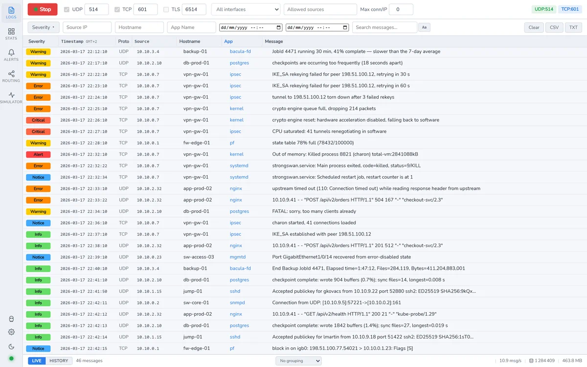
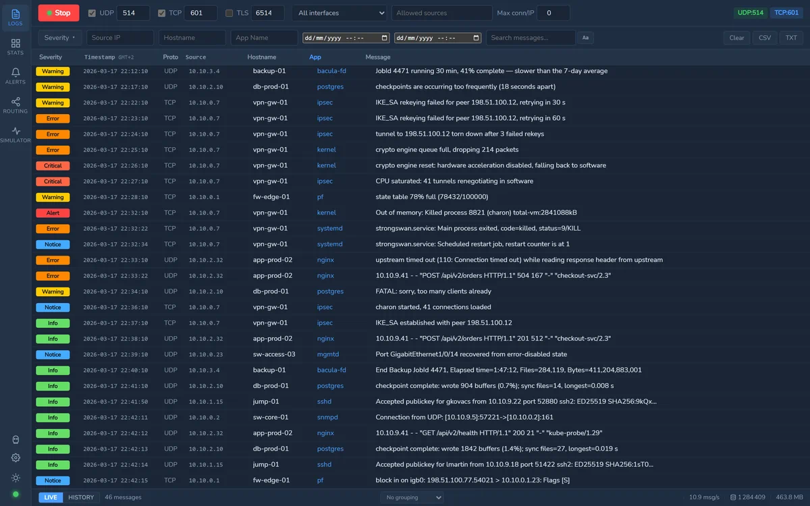
What it is
Four jobs that usually mean four pieces of infrastructure. Here they are one window, and the parts know about each other: the rule that raises an alert is the same shape as the rule that forwards a line to your SIEM.
UDP, TCP and TLS listeners, any port, bound to one interface or all of them. RFC 5424 with a fallback to RFC 3164, so the switch that has not been updated since 2009 still parses. Mutual TLS where senders must prove who they are.
A local SQLite database with full-text search, a retention window you set, and optional encryption at rest. The live view holds the last ten thousand lines in memory; history holds as long as you asked for.
Alert rules on a substring or a regular expression, a severity threshold, a host or an application, with a cooldown so one flapping port does not become four hundred notifications.
Rules decide which messages are interesting, destinations decide where they go: another syslog collector, a webhook, or e-mail. Relaying a whole stream and e-mailing one alert are the same mechanism.
A built-in traffic generator, so you can see the thing work before a single device is pointed at it — and reproduce a problem on demand afterwards.
Anonymous mode replaces hostnames, addresses and user names with stable stand-ins, so a screenshot can go in a ticket without going through a redaction tool first.
Routing
Every message is offered to the router, not only the ones that trip an alert — which is what makes a bounce relay possible at all. An alert-shaped hook cannot express "send this whole stream to the SIEM".
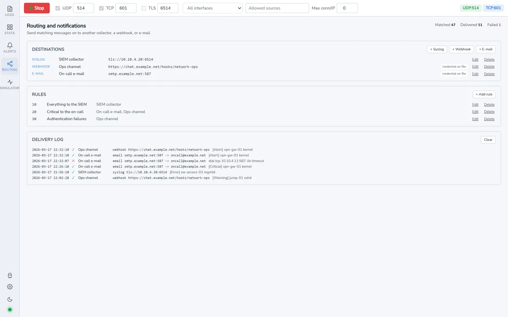
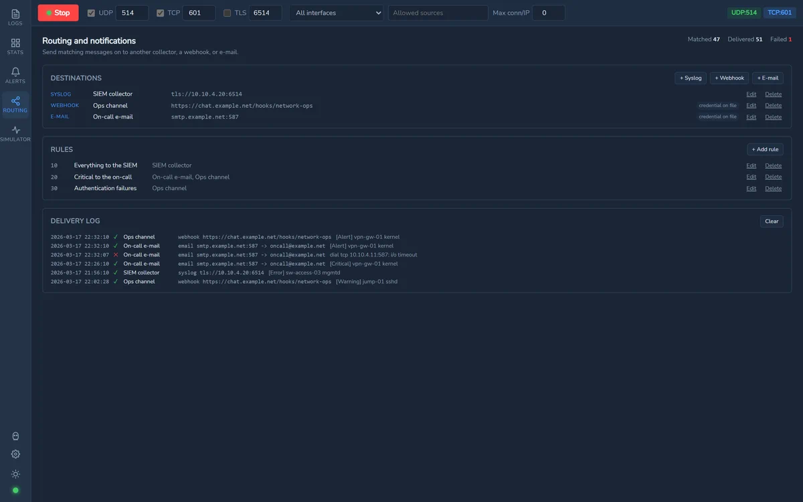
A token or password is write-only and bound to the destination it was given for. Move a webhook to another host and the credential is dropped rather than followed there — otherwise naming a destination's id while pointing the URL elsewhere reads the token straight back.
A destination aimed at this application's own listener is refused when you save it. A message that has already been relayed is not relayed again. And a destination flooded with repeating content is cut off and told to you, rather than quietly filling a disk.
Newlines are stripped from relayed messages, so a log line cannot forge a second syslog frame. Mail bodies are dot-stuffed and headers CRLF-stripped. A webhook refuses a cross-origin redirect that would hand its token to somebody else.
See it first
Not a video and not a mock-up: the real interface, running on sample data, with the backend replaced by fixtures. The screenshots on this page come from the same bundle, so they cannot show something the product does not actually produce.
Around the application
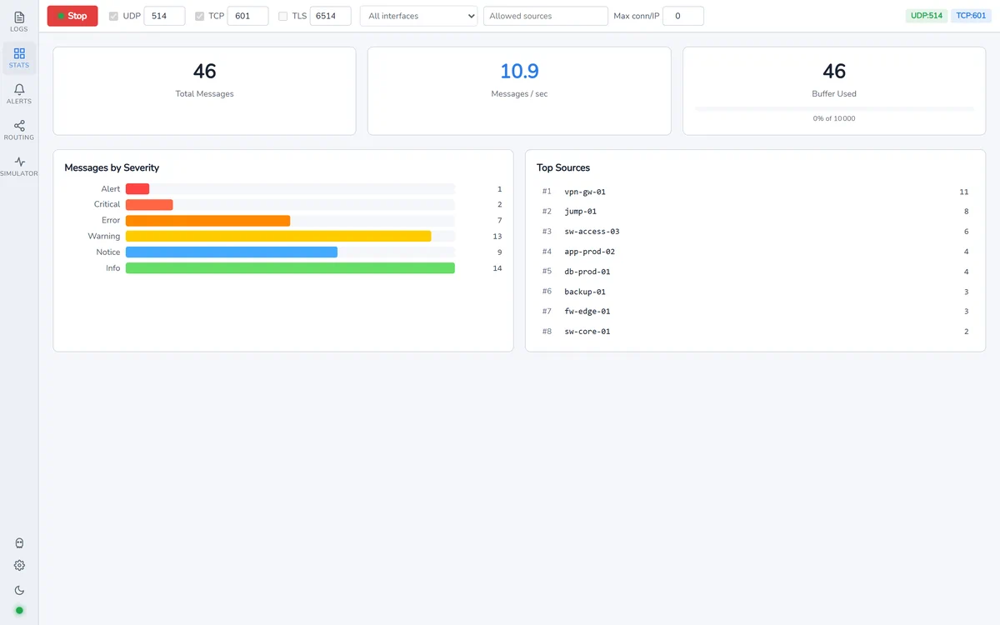
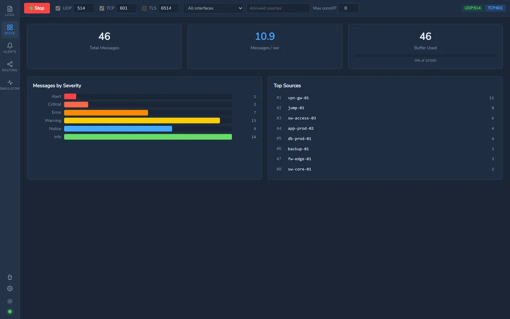
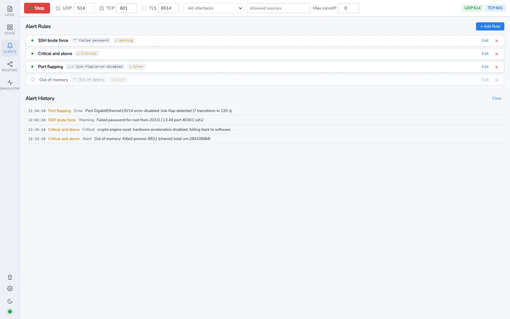
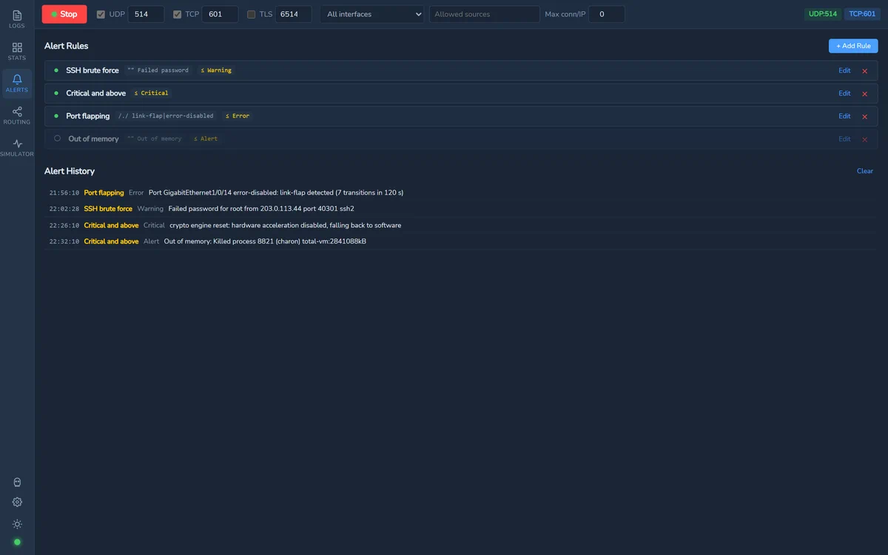
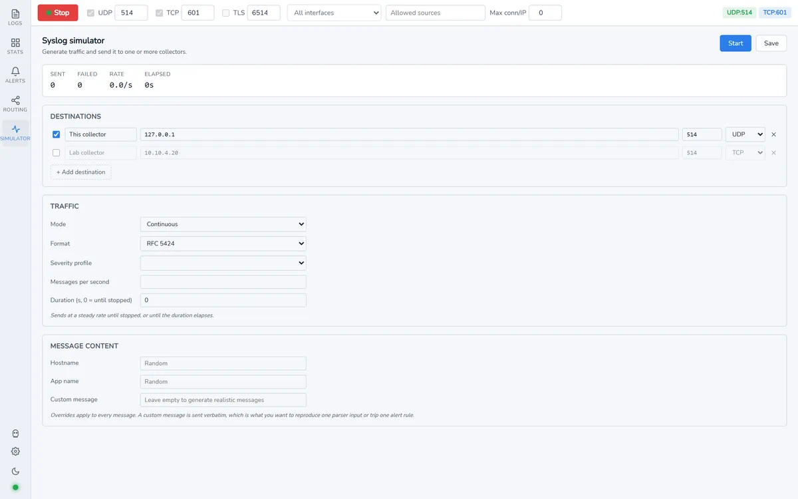
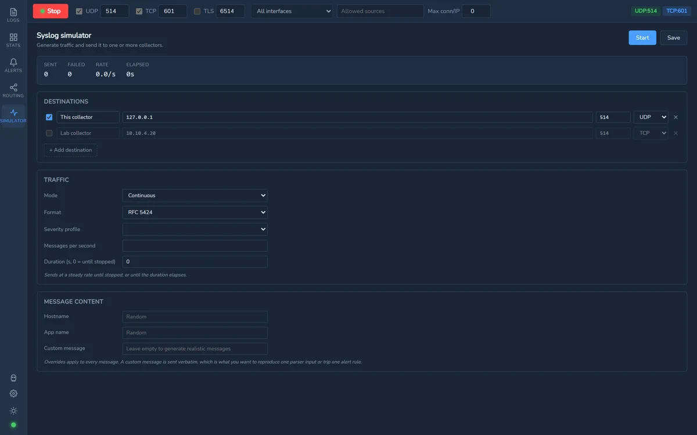
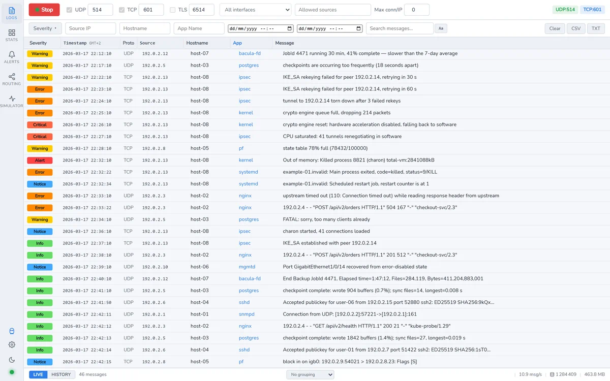
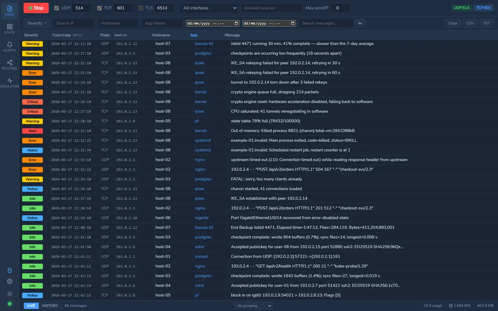
What it is not
One machine, one database. It is a tool for an engineer's desk and a small site's collector, not a horizontally scaled log platform. If you need shards and replicas, you need something else — and it will relay to it.
Source addresses on UDP are trivially spoofable. The allowed-sources list is hygiene, not authentication. Where senders must be authenticated, use TLS with client certificates.
It does not phone home, and there is no account. The only network traffic it makes on its own is the update check, which you can turn off.